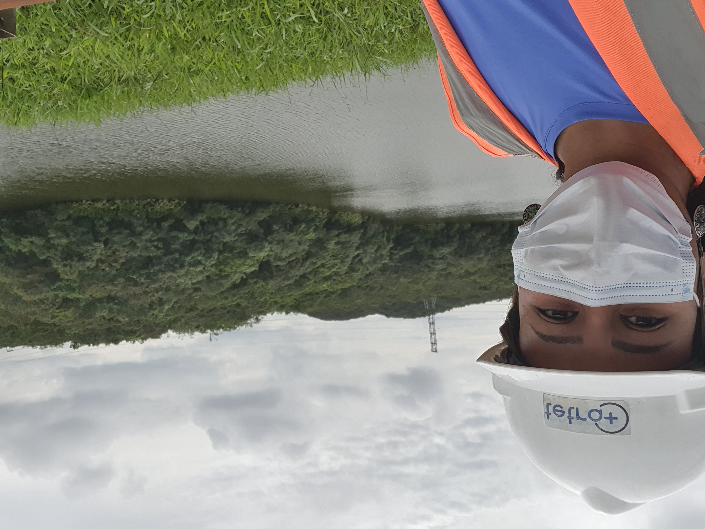

Currículo
Experiências
- Jofegê Pavimentação e Construção LTDA (2011 á 2015) - Técnica em Meio Ambiente
- Enotec Engenharia Obras e Tecnologia Ltda. (2015 á 2018) - Técnica em Meio Ambiente
- Enotec Engenharia Obras e Tecnologia Ltda. (2018 á 2021) - Coordenadora de Meio Ambiente
- Tetra Mais Consultoria Ltda. (2022 á 2023) - Supervisora de Campo
Estudos
- Trabalhando em Equipes Ágeis - DIO - Curso com Certificado
- Princípios de Desenvolvimento de Software - DIO - Curso com Certificado
- Aprendendo a Sintaxe Java - DIO - Curso com Certificado
- HTML E CSS: Cabeçalho, Footer E Variáveis CSS - Alura - Curso com Certificado
- HTML E CSS: Ambientes de Desenvolvimento, Estrutura de Arquivos e Tags - Alura - Curso com Certificado
- HTML E CSS: Classes, Posicionamento e Flexbox - Alura - Curso com Certificado
